Learning
Machines
Generative AI for dermatology — not science fiction, not a threat, a tool you can start using this week.
Ramie Fathy, MD · Johns Hopkins Department of Dermatology · June 3, 2026
The ladder we climbed
To understand it,
start with us.
Knowledge jumps between minds and across generations. Culture starts to compound.
We act beyond our biology — the hand axe, writing, the abacus, the computer.
We sequence steps and carry them out toward distant goals — agriculture, institutions, science.
Language, tools, plans. Hold those three — we're about to watch a machine climb the very same ladder.
The ladder we climbed
AI is older than you think.
MYCIN beat some clinicians on antibiotics — but every rule was hand-coded. Brilliant, brittle, never deployed.
Stop writing rules; show examples. Dermatology was first — Esteva 2017 matched dermatologists on skin cancer.
One 2017 architecture made giant language models possible. ChatGPT (2022) handed it to everyone.
The ladder we climbed
The Transformer's trick.
Weigh every word against every other — all at once, not one at a time. Suddenly the machine had context.
Attention weighs which earlier words matter most for predicting the next one.
Inside the learning machine
Rung 1 · It predicts the next word.
"The dermatologist examined the ____ "
millions of weights — what training tunes
Do that over all of human text and understanding falls out as a side effect. (It reads tokens, not letters — why it miscounts and can misdose. Trust the language; verify every number.)
Inside the learning machine
Read everything, then get aligned.
Read the internet — a vast knowledge sponge that only autocompletes.
Learn to answer the question you actually asked.
Tuned to human preference — what made ChatGPT usable.
The unlock was scale: make it bigger, feed it more — and abilities nobody programmed simply emerge, none of them taught directly:
Inside the learning machine
Confident.
Often wrong.
It optimizes for plausible, not true — fluent, formatted, sometimes invented, with no built-in "I don't know." You sign the note.
- 1Sycophancy. It leans toward agreeing with you.
- 2Automation bias. You stop checking because it sounds sure.
- 3Worst on the long tail. Most confidently wrong on rare presentations and skin of color — your hardest cases.
Inside the learning machine
So how do you make it
trustworthy?
| — ground it (RAG)Don't trust its memory — hand it the evidence at answer time. A knowledge graph or document store retrieves the right source and the model reasons over that. The hallucination antidote. | — retrain it (fine-tune)Show it thousands of domain examples so the skill is baked in — fine-tuning for dermoscopy, or training a derm-specific model. More effort, deeper specialization. |
Inside the learning machine
Rung 2 · It can see —
and use tools.
A word-piece — or an image — becomes tokens, then an embedding: a list of numbers capturing its meaning in context — what it is, what it's part of, even its tone. So photos, dermoscopy, and PDFs all enter in the model's native "language," and it can call tools (calculator, web, code) to act beyond its memory.
lesion → [ 0.18 · −0.62 · 0.91 · 0.04 · … ]
But seeing isn't expert reading — lab ≠ bedside.
Inside the learning machine
Rung 3 · It thinks,
then acts.
Newer models reason — spend compute working a problem before answering. Wrap that in a loop with tools and a goal and you get an agent: it plans, acts, checks, and repeats.
agent loop
› plan the steps
› act — use a tool
› observe the result
› fix & repeat
────────────
toward a goal
The big idea
Language → Tools → Plans
youknowledge crosses minds & generations
itit learned language from nearly everything we've written
youact beyond your biology — the abacus, writing
itfunction calling — calculator, web, code, the EHR
yousequence steps toward a distant goal
itagents — they plan, act & loop toward a goal
We needed ~100,000 years to climb that ladder.
The machine did it in about three.
agent = brain + hands + persistence + goalLearning to think
Residency teaches us to think.
infectious vs non-infectious — papulosquamous, eczematous, urticarial, autoimmune…
benign vs malignant growths.
genodermatoses, metabolic and toxic insults, trauma.
We learn the classic "big boxes" that sort every disease into a mechanism. And in parallel, the machines have been learning to do the same.
Learning to think
We work through
algorithms.
Find the patterns that, together, point to an answer. In first year I began building mind maps of the diagnostic process I saw in clinic — trying to fine-tune my own algorithm to run it faster and more accurately next time.
(SkinSketches grew from the same instinct — turning dry facts into visual stories.) And AI is unmatched at helping collect, organize, and make sense of all of it.
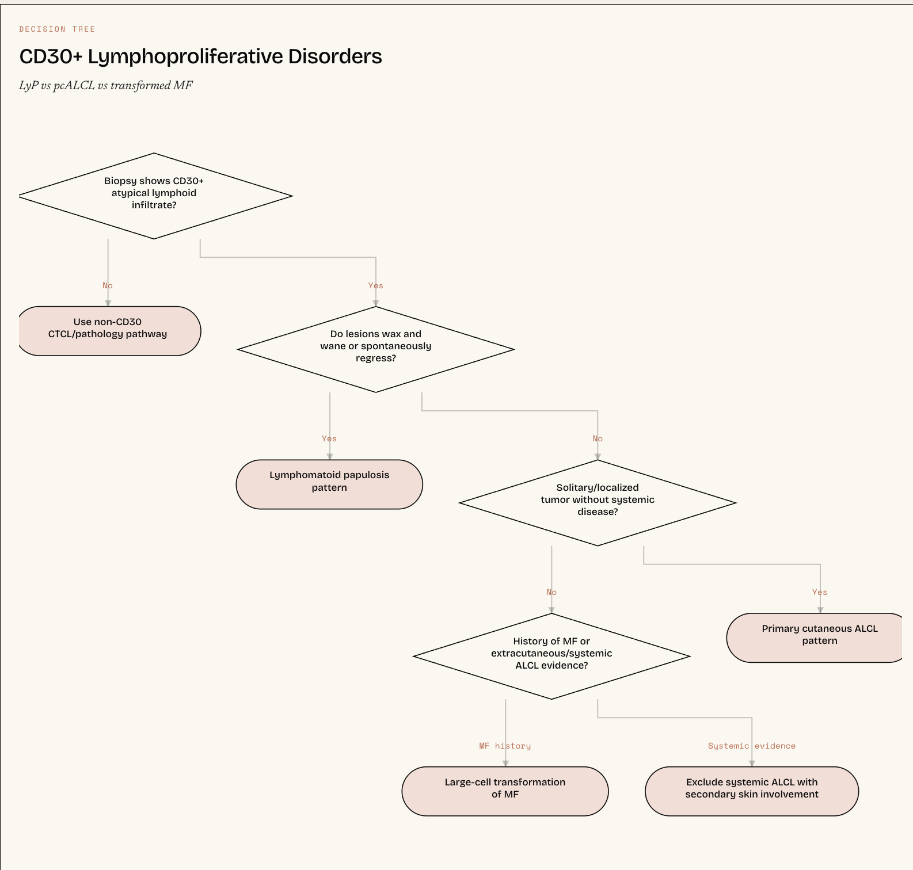
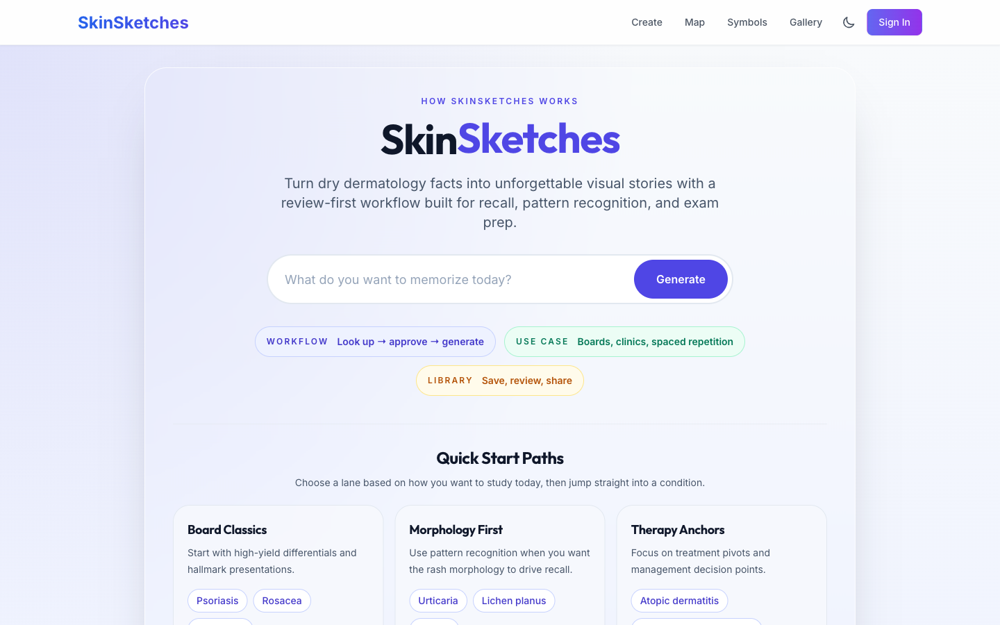
Learning to think
Infinite knowledge,
questionable retention.
Tools like OpenEvidence fill our knowledge gaps in seconds, grounded in the literature.
The catch: lean on them and we offload the very reasoning that builds retention.
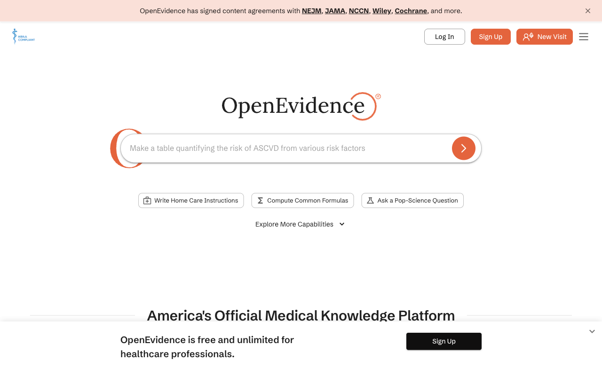
Learning to think
But it falters —
and sounds sure anyway.
It hallucinates, loses the thread when overloaded, and still reads as confident — and, to the unfamiliar eye, correct. In medicine, that's not a typo. It's a harm.
A FAMILIAR FAILURE
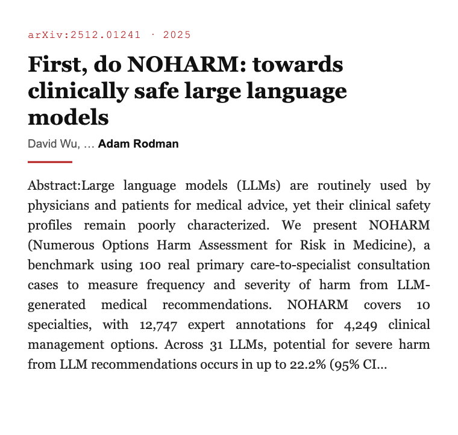
Rodman et al., NOHARM (2025): up to ~22% of cases risked severe harm — 76.6% from omissions.
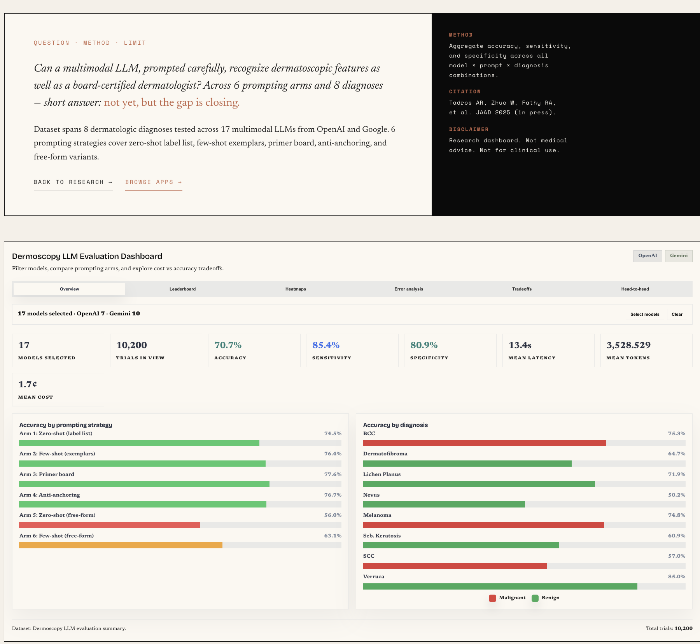
Learning to think · can it reason on derm?
Can it read dermoscopy?
My own eval — 17 models, 10,200 trials, 8 diagnoses. The honest answer: not yet — but the gap is closing. (JAAD 2025)
Learning to think
Adam Rodman studied the clinical-reasoning process long before LLMs — so he was positioned to turn it into rigorous evaluations of how these models actually reason. The trail:
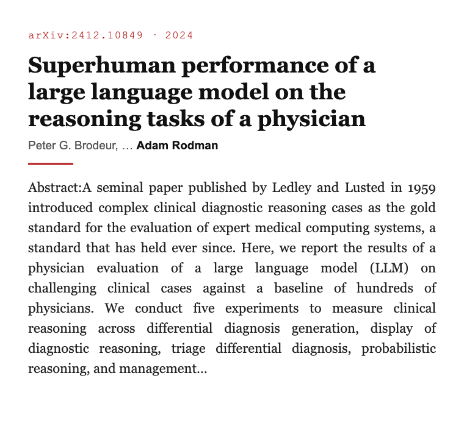
2024 · reasoning tasks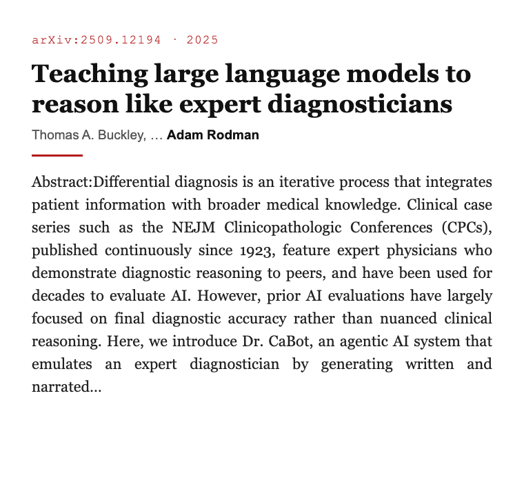
2025 · expert-level (Dr. CaBot)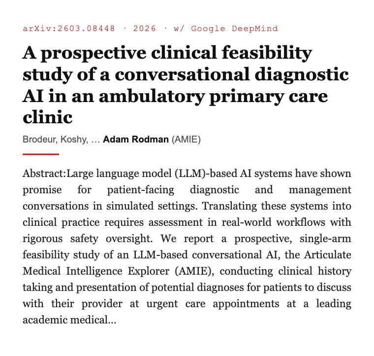
→ into the clinic · DeepMindLearning to think
Into the clinic —
a triadic encounter.
The AMIE ambulatory study (2026): real patients, accuracy comparable to clinicians, more patient trust, zero safety stops. Now Rodman is building a clinic that is triadic from the ground up — patient, physician, and a real-time AI assistant, supervised by a second physician each encounter.
To me this is the first real step toward a better kind of care — and what I'll help develop and validate in fellowship next year. Human + machine, each catching what the other misses.
The AMIE feasibility study — with Google DeepMind.
The hidden risk
Lean on it, and
the skill fades.
GPS weakened our sense of direction. Offload the reasoning to an assistant and our clinical skills can atrophy the same way. Give expert endoscopists an AI polyp-finder, then take it away — their own detection rate drops.
Budzyń et al., Lancet Gastroenterol Hepatol 2025. If seasoned experts erode, what about trainees still building the gestalt?
So the real question isn't "can AI do dermatology?"
It's "how do we use it to deepen judgment, not erode it?"
"AI use may be deskilling doctors, new Lancet study warns."
"Using AI made doctors worse at spotting cancer without assistance."
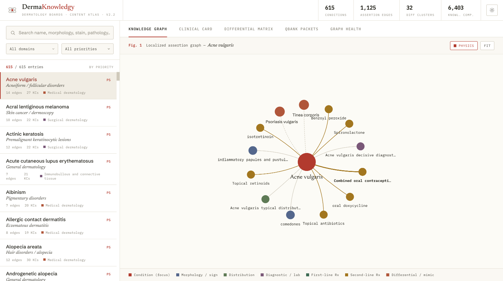
My answer · ground it
dermaknowledgy
A literature-grounded knowledge graph — 615 conditions, 6,400+ components. It grounds the model against hallucination and structures the reasoning, so the tool reinforces how we think instead of bypassing it.
What I'm building
dermie
Everything we've learned about reasoning — and about circumventing hallucination — turned into AI-first dermatology learning that instills and reinforces clinical judgment rather than replacing it. The knowledge graph, the models, and pedagogy, in one place.
dermie.io
The toolbox today
Stop Googling it.
Start delegating to it.
We default to using this like the tools we already know — a smarter Google. But the products climb the same ladder: Ask → Create → Browse → Build → Delegate. Here's the everyday toolbox, simplest to most powerful.
the one rule: never paste patient data into a consumer tool.*
The toolbox · 1 of 5
Ask — just talk to it
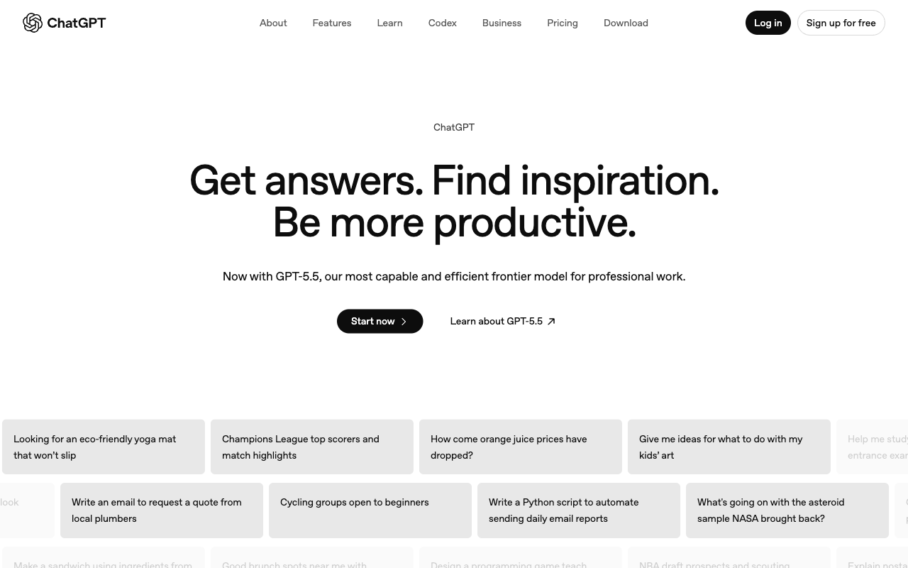
OpenAI's chatbot — the broadest ecosystem; free tier is good, ~$20/mo unlocks the frontier.
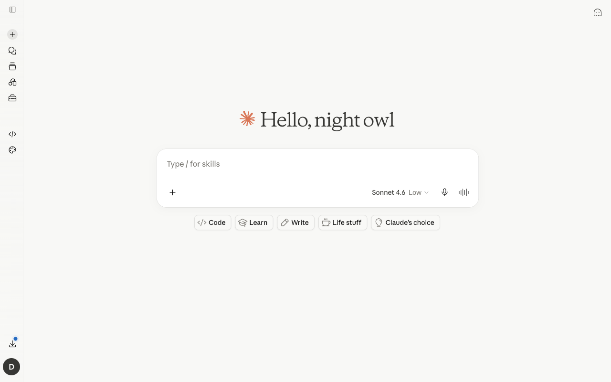
Anthropic's chatbot — strong writing and reasoning; what this deck was built with.
Medical Q&A grounded in the literature — built for clinicians.
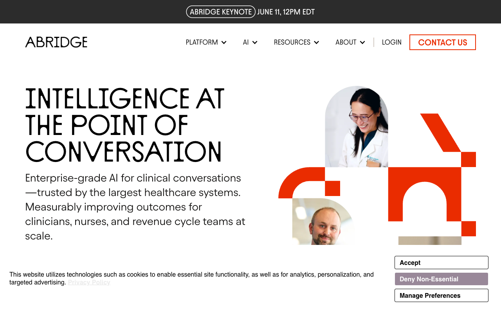
Ambient documentation — listens to the visit, drafts the note.
The simplest rung: you type, it answers. Most people never leave here.
The toolbox · 2 of 5
Create — make images, audio, video
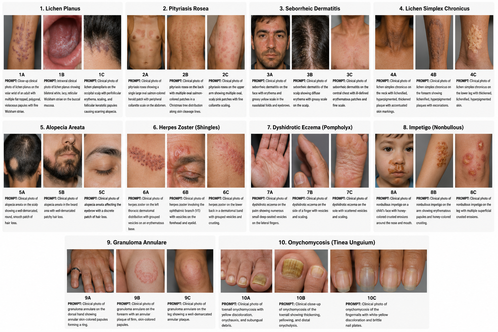
OpenAI's image model — photoreal images from a prompt. It generated this one.
Google's image model — fast, photoreal editing from a prompt.
Same chat box — now it produces media, not just words. Figures, patient handouts, slides.
The toolbox · 3 of 5
Browse — it acts on the web for you
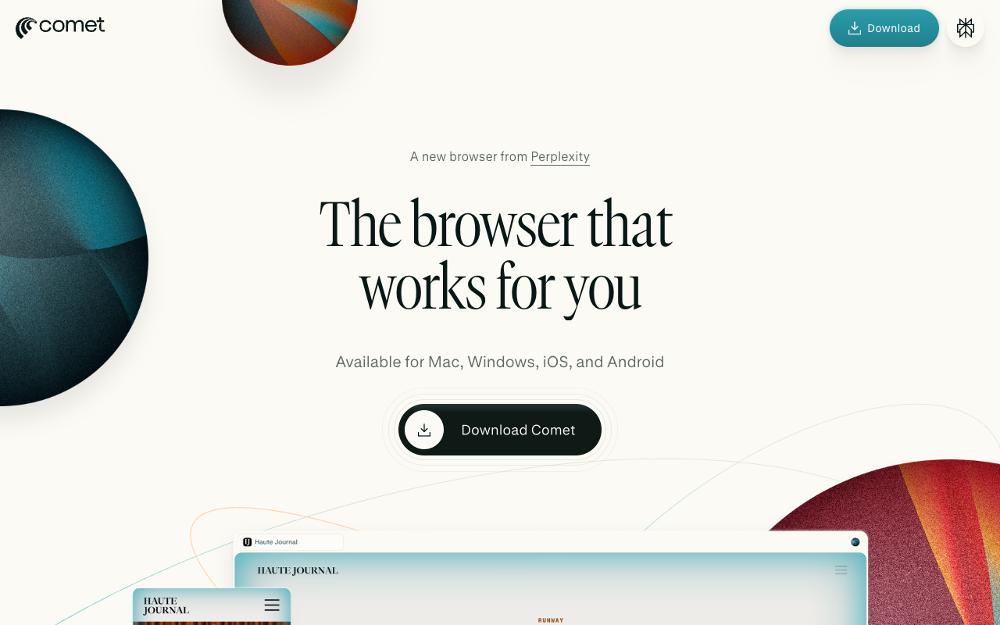
Perplexity's AI browser — researches and clicks for you.
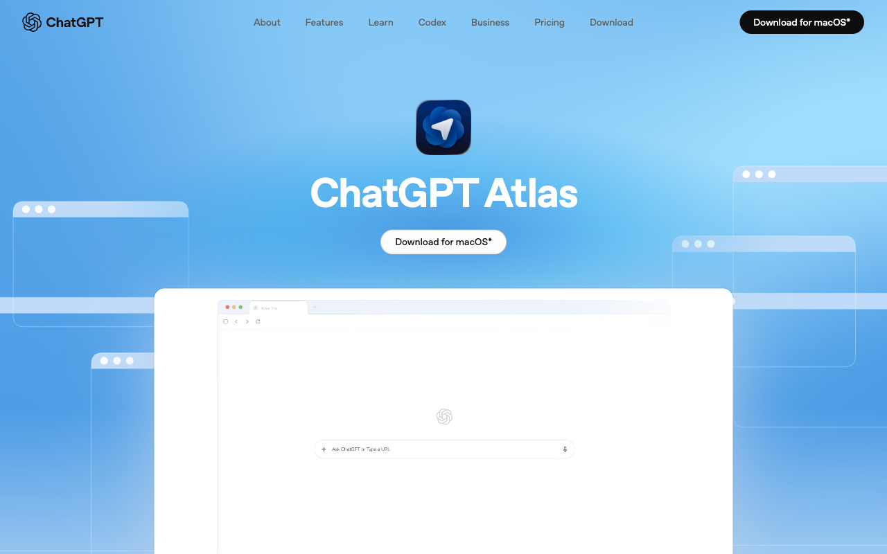
OpenAI's browser — the chat sits over every page.
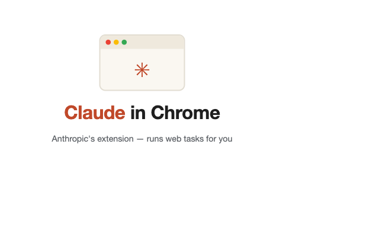
An extension that fills forms and runs web tasks on command.
Now it leaves the chat box — reading and clicking through the web on your behalf.
The toolbox · 4 of 5
Build — on your files, your machine
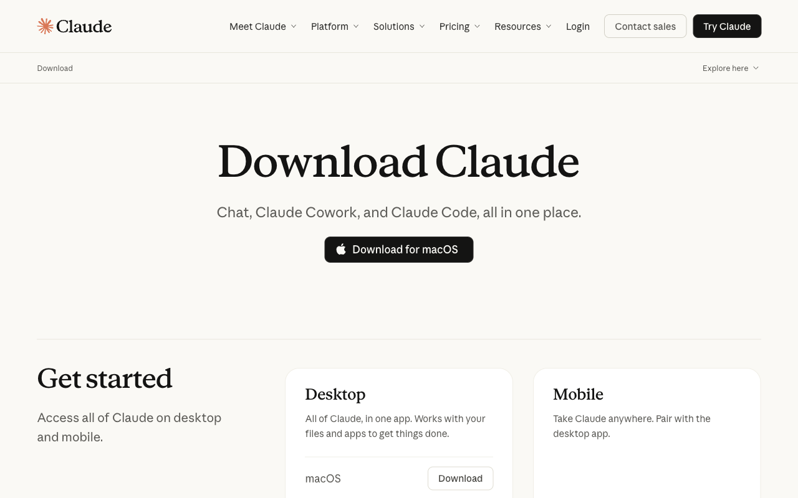
Connect it to your documents and apps; it works across them.
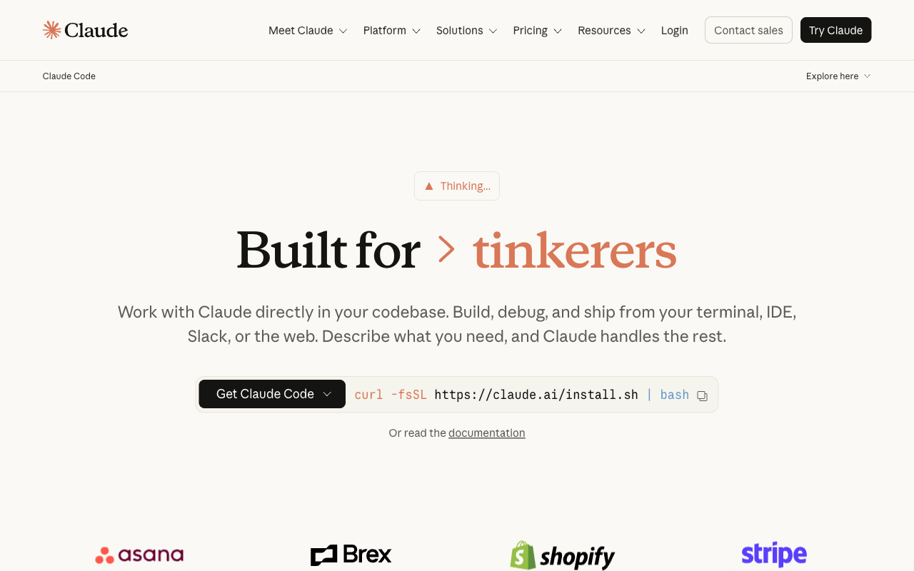
A coding & research assistant that reads and writes whole projects.
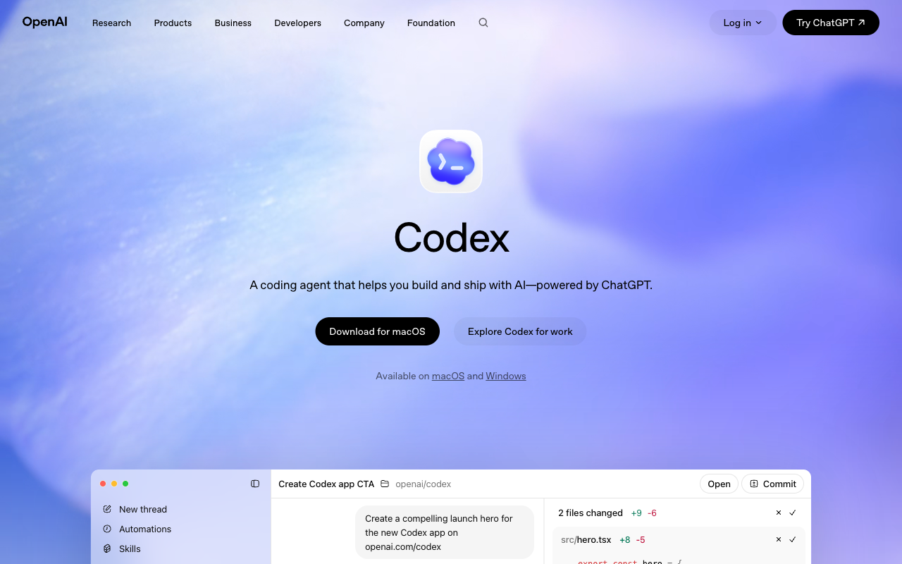
OpenAI's agentic coder — and a desktop app that works across your files and apps, like Claude Desktop.
No coding background required — you describe the goal in plain English; it builds.
The toolbox · 5 of 5
Delegate — hand off the whole goal
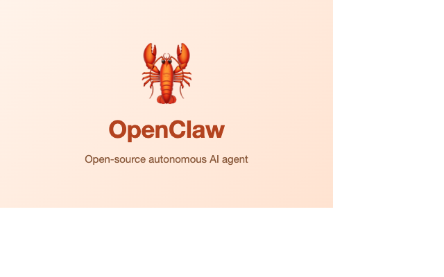
An autonomous agent that pursues a goal across tools and time.

Set a task; it plans, runs, fixes, and reports back.
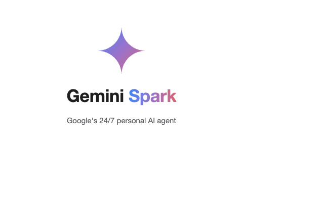
Describe an app or workflow; it builds and runs it for you.
Most autonomy, most leverage — and you still sign off.
The top rung — Plans from the spine, as a product. Ask me about any of these afterward.
If you remember three things
Learning machines.
- 1It's a tool, not an oracle. Context in, verify out — you're the attending, you sign the note.
- 2Language → Tools → Plans. It climbed our ladder in three years; once you see the rungs, it isn't magic.
- 3Keep learning. The machines won't stop — leverage goes to those who direct them. Derm should lead, on our terms.
Happy to help anyone get started — and to take questions on any tool I showed. — Ramie Fathy, MD
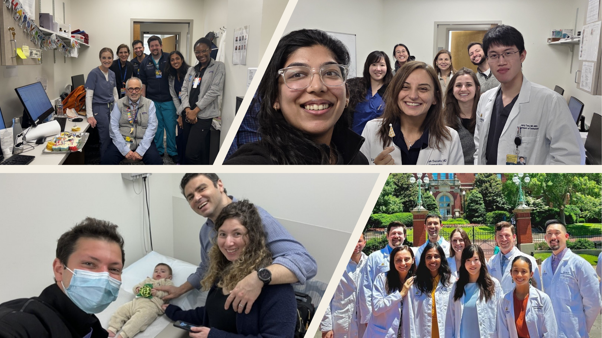
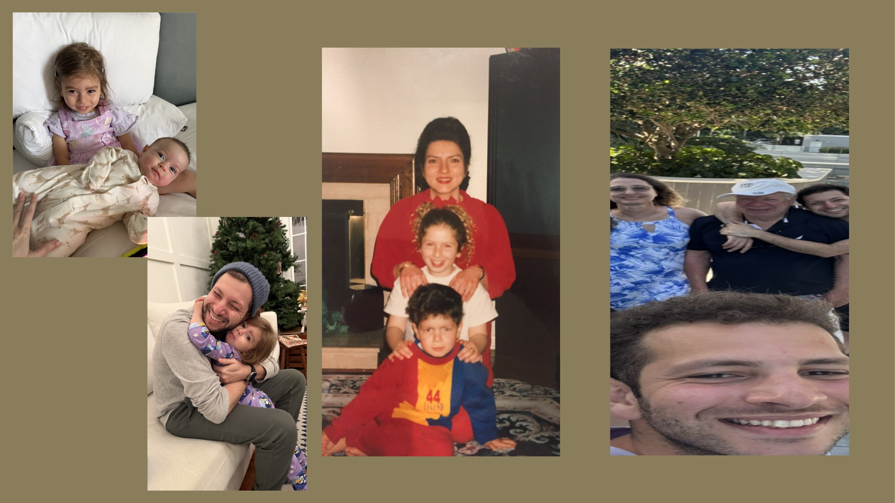
Appendix · for Q&A
Is it coming for my job?
Appendix · for Q&A
We've heard this before.
| — 2016, a famous prediction"We should stop training radiologists now. They'll be obsolete in five years." — a leading AI pioneer | — 2026, the realityRadiology is busier and short-staffed. AI reads alongside them — and the specialty grew. The job changed; it didn't vanish. |
Appendix · our debt
Skin of color
is our blind spot.
Models learn from the images we gave them — and our archives badly underrepresent dark skin. SOTA AI (and dermatologists) underperform on darker skin and rare disease. And AI-generated derm images are realistic but biased and often wrong (JEADV 2025).
Daneshjou's DDI dataset proved it — and showed diverse data closes the gap. The fix is ours.
the data debt
public derm datasets:
Fitzpatrick V–VI barely present
→ models worse on dark skin
→ dermatologists, too
→ fix: diverse data + fine-tuning
Appendix · for Q&A
Who's accountable
when it's wrong?
- 1FDA. Regulates clinical AI as a device (SaMD) — hundreds cleared. The hard problem: "locked" vs "adaptive" models that keep learning.
- 2EU AI Act. Medical AI is "high-risk" — strict documentation and human oversight.
- 3Liability today. The clinician who signs the note. The model is not a defendant.
- 4Still catching up. Validation standards, reimbursement, post-market monitoring.